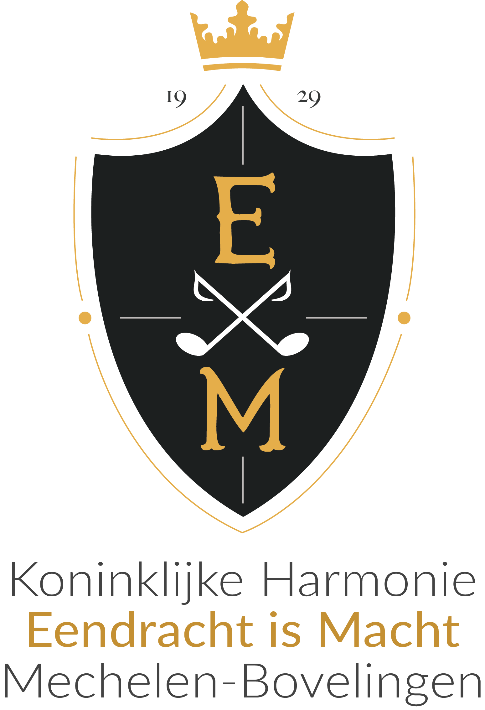

| Home | Geschiedenis | Kalender | Contact |

Hier wordt een nieuwe website gebouwd. Tot binnenkort!
De fanfare ontstond eigenlijk eerder bij toeval, bij de viering van de gouden bruiloft van Eduard Schoefs en Betje Mignolet in 1929.
De feestelingen zouden per stoet rond het dorp gereden worden.
Enkele jaren voordien was hier nog een fanfare geweest, maar toen hun dirigent Jean Erens naar Brussel verhuisde, werd de vereniging op non-actief gezet.
Bijgevolg waren er nog altijd mensen die in deze fanfare gespeeld hadden en een instrument bezaten.
Eén onder hen, onderwijzer Jean Van Mechelen, kreeg het idee de voornoemde gouden-bruiloftstoet muzikaal op te luisteren.
Andere leden werden opgetrommeld, Van Mechelen leerde hen gauw enkele marsen aan en zo namen zij deel aan de stoet en werd de huidige fanfare geboren.
De daaropvolgende winter werd een cursus notenleer georganiseerd en stelde de gemeente een lokaal ter beschikking.
In 1929 begonnen, telde zij in 1933 al 33 spelende leden.
Tijdens de tweede wereldoorlog werden alle instrumenten aangeslagen door de bezetter doch nauwelijks waren de Duitsers gevlucht of de fanfare hield reeds een zegeoptocht naar Rukkelingen.
Haar eerste vorm van kostumering kreeg zij in 1952 onder de vorm van een groen fluwelen kepi met grijze rand en zwarte klip.
Toen meester Van Mechelen zich in 1957 terugtrok, nam een ander onderwijzer het roer over: namelijk de heer Victor Thirion.
Hij zorgde ervoor dat de fanfare in 1966 uitgerust werd met een mooi grijs uniform met rode versieringen.
Onder zijn impuls kwam er ook voor de eerste keer een trommelkorps bestaande uit een groep jongens, opgeleid door de heer Jean Nelis, die jammer genoeg niet lang daarna overleed.
In 1974 richtte Thirion een nieuw trommelkorps op, ditmaal bestaande uit allemaal meisjes.
Na een opleiding van twee jaar trok dit korps de straat op, getooid in een een prachtig uniform, onder leiding van de twee tamboer-majoors Marie-Sylviane Coune en Marie-Paule Vranken.
Ter gelegenheid van haar 50-jarig bestaan werd de fanfare in 1979 verheven tot 'Koninklijke' en werd een nieuw vaandel aangekocht.
In 1981 kreeg het trommelkorps nieuwe uniformen.
Dan kwam 18 oktober 1984, een zwarte dag voor de fanfare: het overlijden van voorzitter en dirigent Victor Thirion.
De fakkel werd overgenomen door Hubert Neven die de fanfare in 1985 meteen voorzag van nieuwe uniformen: ditmaal in donkerblauw. In 1992 legde hij het dirigentstokje neer vanwege zijn hoge ouderdom (76 jaar). Dit belandde ad interim in de handen van voorzitter Jos Misotten en een drietal maanden bij diens broer Fernand Misotten.
In 1994 gaf de voorzitter het dirigentstokje over aan de toen 18-jarige Bert Mignolet.
In enkele maanden tijd slaagde hij erin de fanfare op muzikaal vlak een ware metamorphose te laten ondergaan.
Als tweede dirigent werd Saskia Schoefs aangesteld.
Het is onder hun leiding dat in 1996 het eerste galaconcert plaatsvond, overigens één van de eersten in de streek.
In 1999 telde de vereniging zo'n 36 leden.
Na enkele jaren besloot Bert Mignolet om andere horizonten te verkennen en kwam het dirigentstokje in handen van Kurt Neven, kleinzoon van wijlen Hubert Neven.
Vanaf 2006 zou dit terechtkomen bij Bart Falise. Toen Falise in 2012 stopte, werd er niet meteen een vervanging gevonden.
Na een zoektocht van enkele weken/maanden vol proefrepetities werd in 2013 besloten om Stefaan Daems aan te stellen als nieuwe dirigent.
In 2023, na een periode van 10 jaar, werd gekozen voor vernieuwing met een kans voor eigen talent Jonas Liesenborghs.
Begin 2024 kwam deze samenwerking echter onvoorzien ten einde en belandde het stokje tot op heden terug in handen van ouddirigent Kurt Neven.